Compare read and molecule counts in single cells per batch
PoYuan Tung & Joyce Hsiao
2015-09-22
Last updated: 2015-09-24
Code version: 9d87919cfee4ceb697409c1ff079d1ed897d8e73
Comparing the conversion of reads to molecules for each cell. Used three different metrics:
- Raw counts
- Log2 counts (pseudocount of 1)
- cpm counts (no log transformation)
- Log2 TMM-normalized counts per million (pseudocount of 0.25)
Input
library("dplyr")
library("ggplot2")
theme_set(theme_bw(base_size = 16))
library("edgeR")
source("functions.R")
library("tidyr")Input annotation.
anno <- read.table("../data/annotation.txt", header = TRUE,
stringsAsFactors = FALSE)
head(anno) individual batch well sample_id
1 19098 1 A01 NA19098.1.A01
2 19098 1 A02 NA19098.1.A02
3 19098 1 A03 NA19098.1.A03
4 19098 1 A04 NA19098.1.A04
5 19098 1 A05 NA19098.1.A05
6 19098 1 A06 NA19098.1.A06Input read counts.
reads <- read.table("../data/reads.txt", header = TRUE,
stringsAsFactors = FALSE)Input molecule counts.
molecules <- read.table("../data/molecules.txt", header = TRUE,
stringsAsFactors = FALSE)Input list of quality single cells.
quality_single_cells <- scan("../data/quality-single-cells.txt",
what = "character")Keep only the single cells that passed the QC filters.
reads <- reads[, colnames(reads) %in% quality_single_cells]
molecules <- molecules[, colnames(molecules) %in% quality_single_cells]
anno <- anno[anno$sample_id %in% quality_single_cells, ]
stopifnot(dim(reads) == dim(molecules),
nrow(anno) == ncol(reads))Distribution of fold change to mean
Look at the distribution of fold change to mean. As being reported by others, the lowly expressed genes show divergent read and molecule counts
## calculate mean
reads_mean <- apply(reads, 1, mean)
molecules_mean <- apply(molecules, 1, mean)
distribution <- data.frame(reads_mean, molecules_mean)
## calculate fold change to mean
distribution$fold_change_read <- log2(reads_mean/mean(reads_mean))
distribution$fold_change_molecule <- log2(molecules_mean/mean(molecules_mean))
## select ERCC
distribution$ERCC <- grepl("ERCC", rownames(distribution))
## color palette
cbPalette <- c("#999999", "#0000FF", "#990033", "#F0E442", "#0072B2", "#D55E00", "#CC79A7", "#009E73")
ggplot(distribution, aes(x = fold_change_molecule, y = fold_change_read, col = ERCC)) + geom_point(size = 3, alpha = 0.5) + scale_colour_manual(values=cbPalette) + stat_function(fun= function(x) {x}, col= "#56B4E9") + labs(x = "log2 fold change to mean (molecule)", y = "log2 fold change to mean (reads)")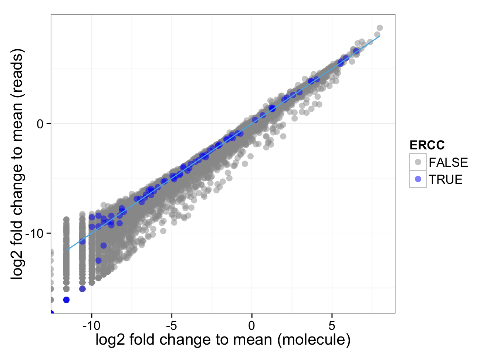
Transformation
In addition to comparing the raw counts of reads and molecules, we compare the log2 counts and the log counts per million.
For the log counts, I add a pseudocount of 1.
reads_log <- log2(reads + 1)
molecules_log <- log2(molecules + 1)standardized by cmp and log-transform
reads_cpm <- cpm(reads, log = FALSE)
molecules_cpm <- cpm(molecules, log = FALSE)Calculate cpm for the reads data using TMM-normalization.
norm_factors_reads <- calcNormFactors(reads, method = "TMM")
reads_tmm <- cpm(reads, lib.size = colSums(reads) * norm_factors_reads,
log = TRUE)And for the molecules.
norm_factors_mol <- calcNormFactors(molecules, method = "TMM")
molecules_tmm <- cpm(molecules, lib.size = colSums(molecules) * norm_factors_mol,
log = TRUE)conversion in each single cell
Counts
Compare the counts. (1) ERCC genes. (2) without ERCC, only endogenous genes
ERCC genes
## grep ERCC
reads_ERCC <- reads[grep("ERCC", rownames(reads)), ]
molecules_ERCC <- molecules[grep("ERCC", rownames(molecules)), ]
## linear regression per cell and make a table with intercept, slope, and r-squared
regression_table_ERCC <- as.data.frame(do.call(rbind,lapply(names(reads_ERCC),function(x){
fit.temp <- lm(molecules_ERCC[,x]~reads_ERCC[,x])
c(x,fit.temp$coefficients,summary(fit.temp)$adj.r.squared)
})))
names(regression_table_ERCC) <- c("sample_id","Intercept","slope","r2")
regression_table_ERCC$Intercept <- as.numeric(as.character(regression_table_ERCC$Intercept))
regression_table_ERCC$slope <- as.numeric(as.character(regression_table_ERCC$slope))
regression_table_ERCC$r2 <- as.numeric(as.character(regression_table_ERCC$r2))
plot(regression_table_ERCC$r2)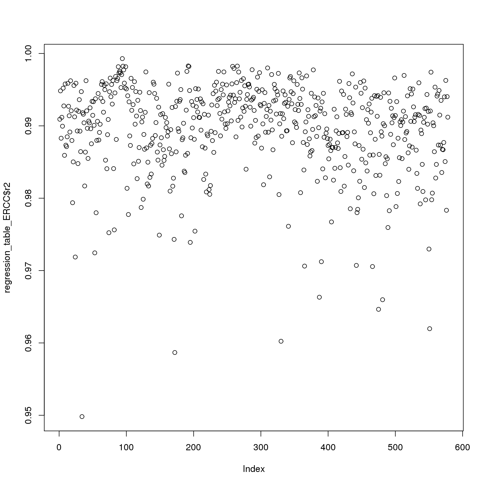
anno_regression_ERCC <- merge(anno,regression_table_ERCC,by="sample_id")
ggplot(anno_regression_ERCC,aes(x=Intercept,y=slope,col=as.factor(individual),shape=as.factor(batch))) + geom_point() + labs(x = "intercept", y = "slope", title = "read-molecule conversion ERCC genes (counts)") + facet_grid(individual ~ batch)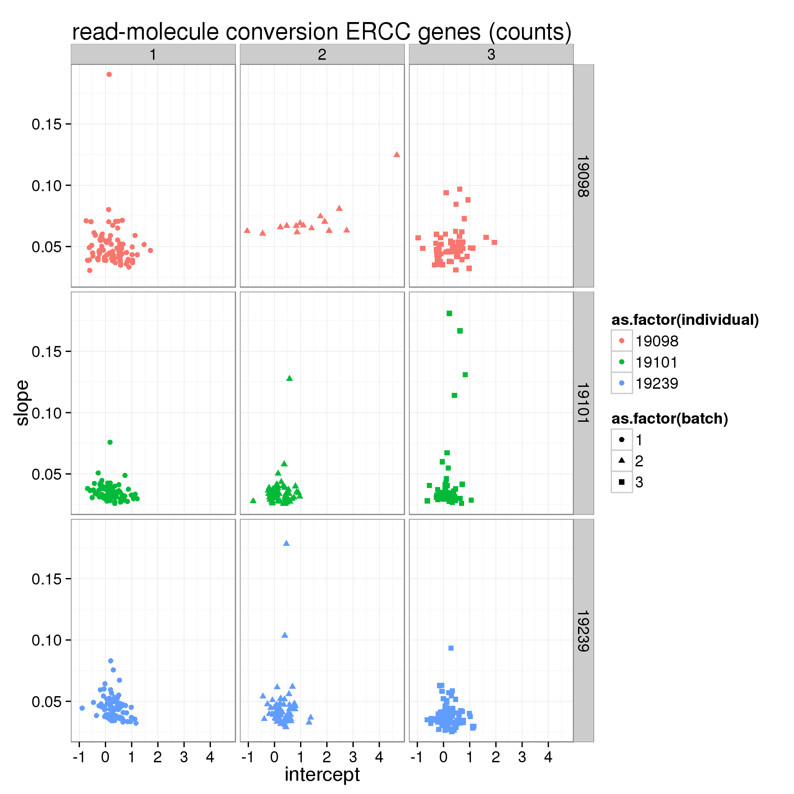
## plot all the lines
anno_regression_ERCC$reads_mean <- apply(reads_ERCC, 2, mean)
anno_regression_ERCC$molecules_mean <- apply(molecules_ERCC, 2, mean)
ggplot(anno_regression_ERCC, aes(x= reads_mean, y= molecules_mean)) + geom_point() + geom_abline(aes(intercept=Intercept, slope=slope, col=as.factor(individual), alpha= 0.5), data=anno_regression_ERCC) + facet_grid(individual ~ batch)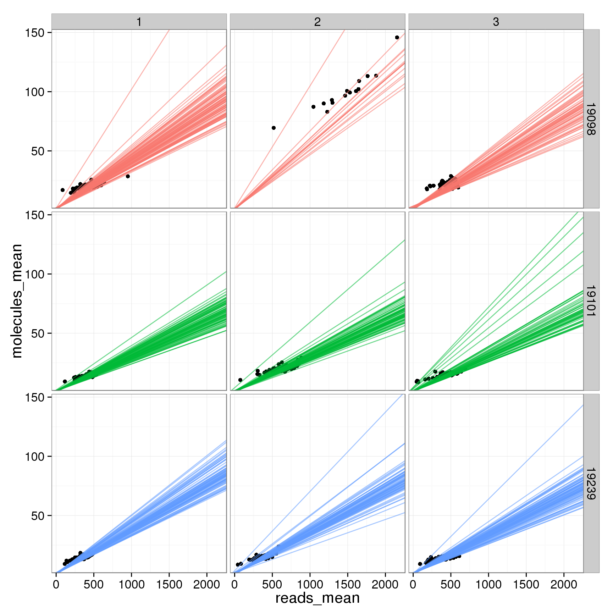
Pairwise distance in (intercept, slope) between batches or individuals.
- Compute pairwise Euclidean distance between cells.
anno_regression_ERCC_dist <- as.matrix( dist(anno_regression_ERCC[ , c("Intercept", "slope")]) )
rownames(anno_regression_ERCC_dist) <- with(anno_regression_ERCC,
paste(individual, batch, sep = "_"))
colnames(anno_regression_ERCC_dist) <- rownames(anno_regression_ERCC_dist)
anno_regression_ERCC_dist[1:2, 1:2] 19098_1 19098_1
19098_1 0.0000000 0.6214327
19098_1 0.6214327 0.0000000- Cell-to-cell Euclidean distance within each individiaual, batch
## All cells
dist_mean <- data.frame(dist = rowSums(anno_regression_ERCC_dist)/(ncol(anno_regression_ERCC_dist) - 1))
ggplot(dist_mean, aes(y = dist, x = 1)) + geom_violin(alpha = .5) +
geom_boxplot(alpha = .01, width = .2, position = position_dodge(width = .9)) +
labs(title = "Mean cell-to-cell distance in (intercept, slope)", x = "") +
theme(axis.text.x = element_text(hjust=1, angle = 45))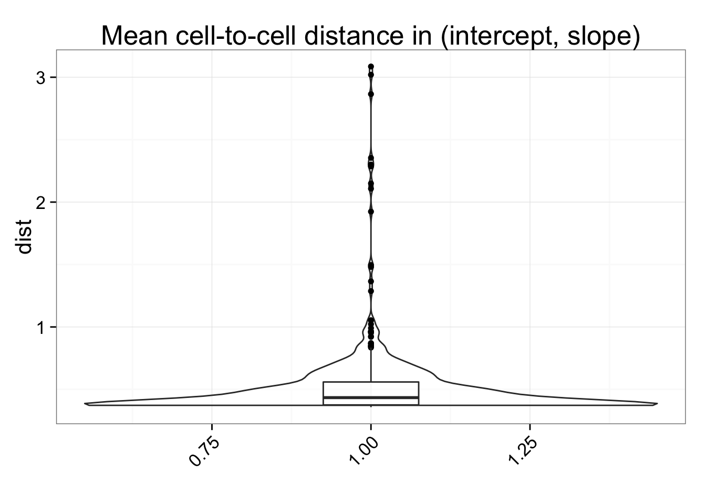
## Within batch
batch_unique <- with(anno_regression_ERCC, paste(individual, batch, sep = "_"))
dist_vec <- lapply(1:length(unique(batch_unique)), function(per_batch) {
dist_foo <- anno_regression_ERCC_dist[batch_unique == unique(batch_unique)[per_batch],
batch_unique == unique(batch_unique)[per_batch] ]
data.frame(dist = c(rowSums(dist_foo)/(ncol(dist_foo) - 1)),
batch_unique = rep(unique(batch_unique)[per_batch], ncol(dist_foo) ) )
})
dist_vec <- do.call(rbind, dist_vec)
str(dist_vec)'data.frame': 578 obs. of 2 variables:
$ dist : num 0.442 0.606 0.608 0.436 0.441 ...
$ batch_unique: Factor w/ 9 levels "19098_1","19098_2",..: 1 1 1 1 1 1 1 1 1 1 ...ggplot(dist_vec, aes(x= factor(batch_unique), y = dist, fill = factor(batch_unique)),
height = 600, width = 2000) +
geom_violin(alpha = .5) + geom_boxplot(alpha = .01, width = .2, position = position_dodge(width = .9)) +
labs(title = "Mean cell-to-cell distance within batch \n
in (intercept, slope)") +
theme(axis.text.x = element_text(hjust=1, angle = 45))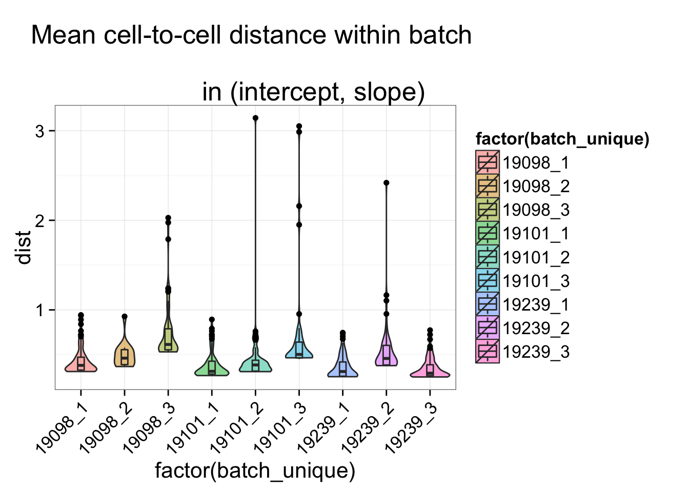
## Within individual
individual <- anno_regression_ERCC$individual
dist_vec <- lapply(1:length(unique(individual)), function(per_individual) {
dist_foo <- anno_regression_ERCC_dist[individual == unique(individual)[per_individual],
individual == unique(individual)[per_individual] ]
data.frame(dist = c(rowSums(dist_foo)/(ncol(dist_foo) - 1)),
individual = rep(unique(individual)[per_individual], ncol(dist_foo) ) )
})
dist_vec <- do.call(rbind, dist_vec)
str(dist_vec)'data.frame': 578 obs. of 2 variables:
$ dist : num 0.514 0.729 0.732 0.515 0.535 ...
$ individual: int 19098 19098 19098 19098 19098 19098 19098 19098 19098 19098 ...ggplot(dist_vec, aes(x= factor(individual), y = dist, fill = factor(individual)),
height = 600, width = 2000) +
geom_violin(alpha = .5) + geom_boxplot(alpha = .01, width = .2, position = position_dodge(width = .9)) +
labs(title = "Mean cell-to-cell distance within individual \n
in (intercept, slope)") +
theme(axis.text.x = element_text(hjust=1, angle = 45))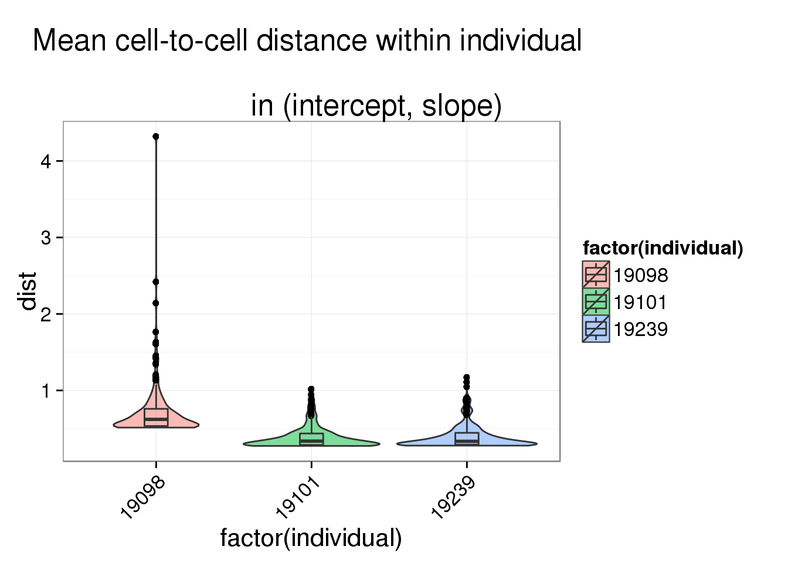
- compare the distance of two cells (1) within batch, (2) between batch of same individual, and (3) between individual
ind_index <- (anno_regression_ERCC$individual)
ind_batch_index <- with(anno_regression_ERCC,paste(individual, batch, sep = "_"))
same_ind_index <- outer(ind_index,ind_index,function(x,y) x==y)
same_batch_index <- outer(ind_batch_index,ind_batch_index,function(x,y) x==y)
dim_temp <- dim(anno_regression_ERCC_dist)
dist_index_matrix <- matrix("diff_ind",nrow=dim_temp[1],ncol=dim_temp[2])
dist_index_matrix[same_ind_index & !same_batch_index] <- "same_ind_diff_batch"
dist_index_matrix[same_batch_index] <- "same_batch"
ans_ERCC <- lapply(unique(c(dist_index_matrix)),function(x){
temp <- c(anno_regression_ERCC_dist[(dist_index_matrix==x)&(upper.tri(dist_index_matrix,diag=FALSE))])
data.frame(dist=temp,type=rep(x,length(temp)))
})
ans1_ERCC <- do.call(rbind,ans_ERCC)
boxplot(dist~type,data=ans1_ERCC)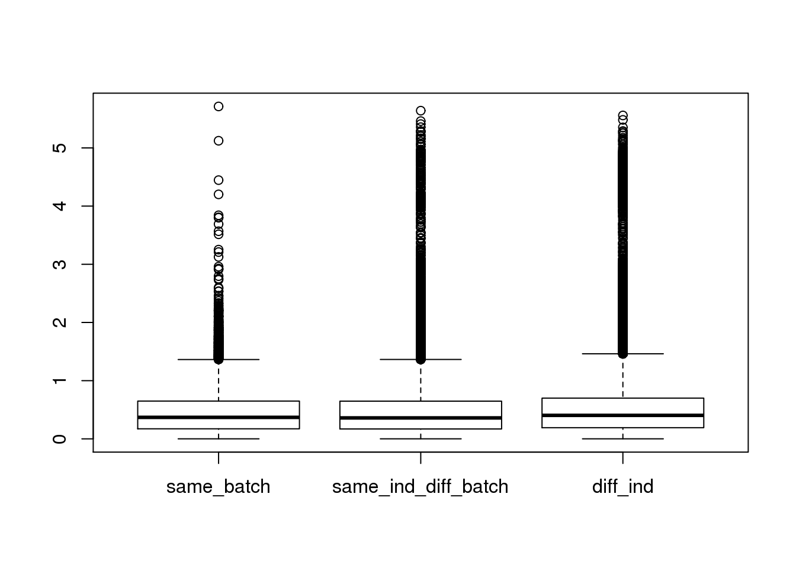
plot(density(ans1_ERCC$dist[ans1_ERCC$type=="same_batch"]))
lines(density(ans1_ERCC$dist[ans1_ERCC$type=="same_ind_diff_batch"]),col=2)
lines(density(ans1_ERCC$dist[ans1_ERCC$type=="diff_ind"]),col=3)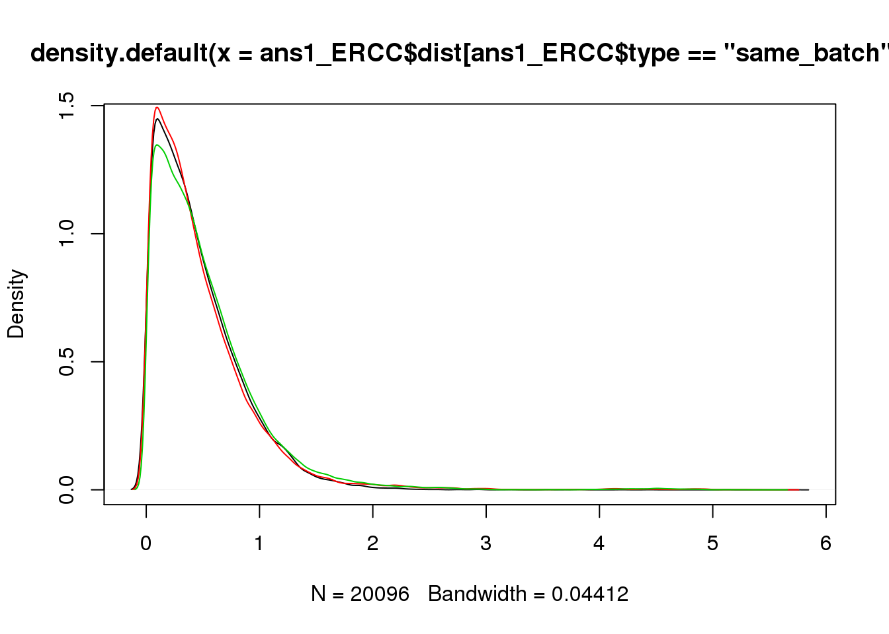
ggplot(ans1_ERCC, aes(x= factor(type), y = dist, col = factor(type)), height = 600, width = 2000) +
geom_boxplot(outlier.shape = NA, alpha = .01, width = .2, position = position_dodge(width = .9)) +
ylim(0,1.5) +
labs(title = "cell-cell distance (slope and intercept of lm) ERCC") +
theme(axis.text.x = element_text(hjust=1, angle = 45))Warning: Removed 5336 rows containing non-finite values (stat_boxplot).Warning: Removed 254 rows containing missing values (geom_point).Warning: Removed 612 rows containing missing values (geom_point).Warning: Removed 1150 rows containing missing values (geom_point).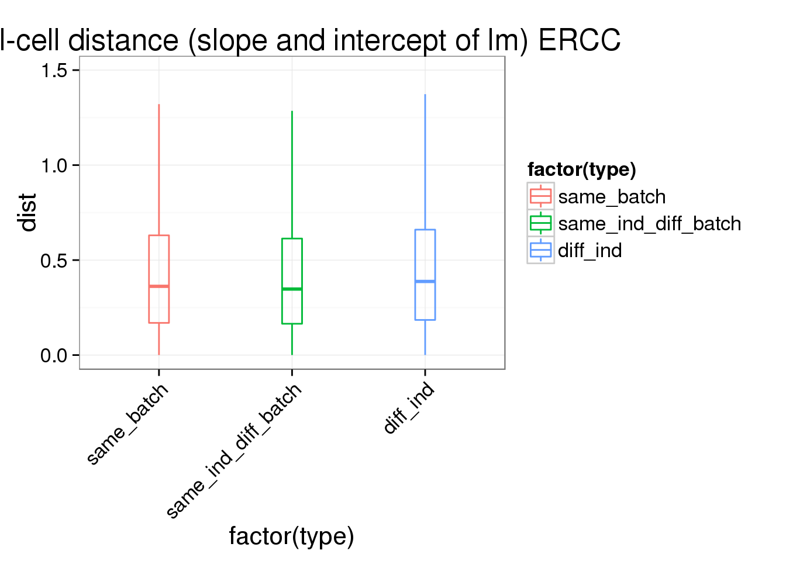
summary(lm(dist~type,data=ans1_ERCC))
Call:
lm(formula = dist ~ type, data = ans1_ERCC)
Residuals:
Min 1Q Median 3Q Max
-0.5171 -0.3175 -0.1125 0.1798 5.2540
Coefficients:
Estimate Std. Error t value Pr(>|t|)
(Intercept) 0.458805 0.003349 136.990 < 2e-16 ***
typesame_ind_diff_batch 0.023554 0.004172 5.646 1.65e-08 ***
typediff_ind 0.058664 0.003642 16.109 < 2e-16 ***
---
Signif. codes: 0 '***' 0.001 '**' 0.01 '*' 0.05 '.' 0.1 ' ' 1
Residual standard error: 0.4748 on 166750 degrees of freedom
Multiple R-squared: 0.002066, Adjusted R-squared: 0.002055
F-statistic: 172.7 on 2 and 166750 DF, p-value: < 2.2e-16Endogenous genes
## grep ENSG
reads_ENSG <- reads[grep("ENSG", rownames(reads)), ]
molecules_ENSG <- molecules[grep("ENSG", rownames(molecules)), ]
## linear regression per cell and make a table with intercept, slope, and r-squared
regression_table_ENSG <- as.data.frame(do.call(rbind,lapply(names(reads_ENSG),function(x){
fit.temp <- lm(molecules_ENSG[,x]~reads_ENSG[,x])
c(x,fit.temp$coefficients,summary(fit.temp)$adj.r.squared)
})))
names(regression_table_ENSG) <- c("sample_id","Intercept","slope","r2")
regression_table_ENSG$Intercept <- as.numeric(as.character(regression_table_ENSG$Intercept))
regression_table_ENSG$slope <- as.numeric(as.character(regression_table_ENSG$slope))
regression_table_ENSG$r2 <- as.numeric(as.character(regression_table_ENSG$r2))
plot(regression_table_ENSG$r2)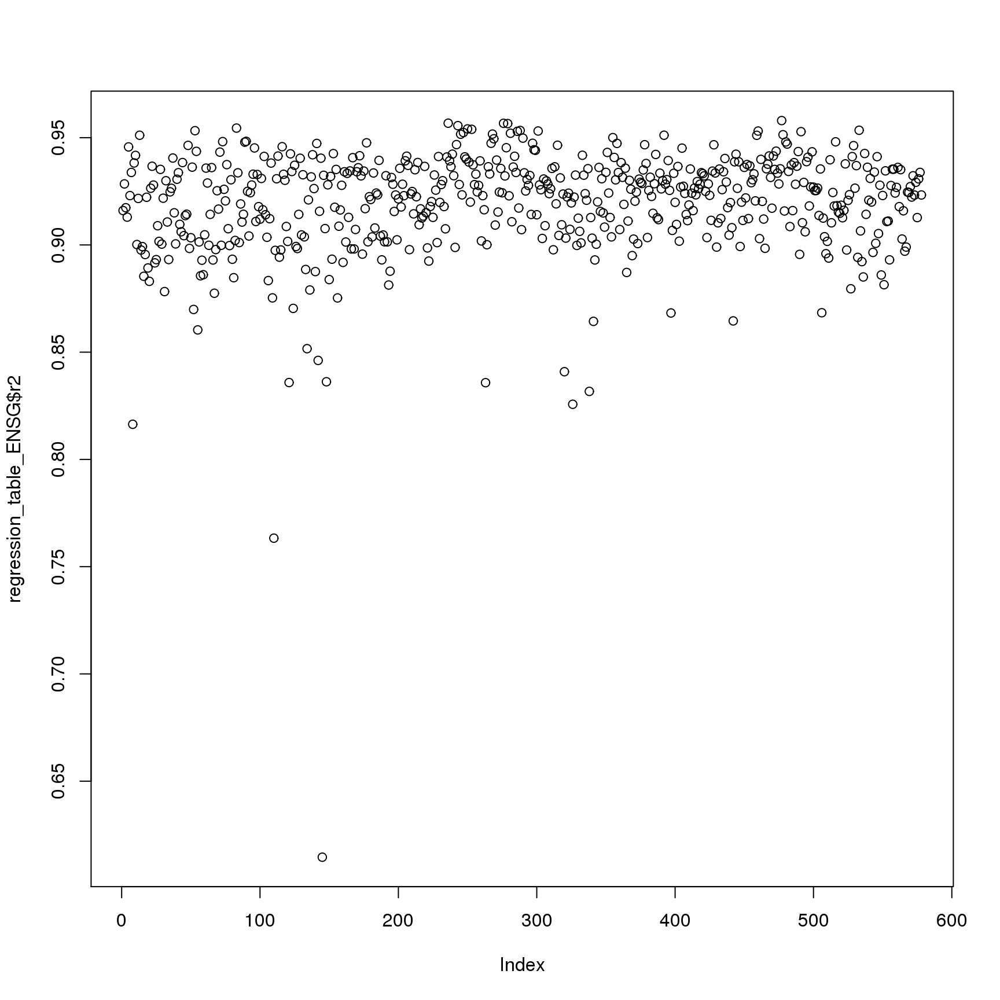
anno_regression_ENSG <- merge(anno,regression_table_ENSG,by="sample_id")
ggplot(anno_regression_ENSG,aes(x=Intercept,y=slope,col=as.factor(individual),shape=as.factor(batch))) + geom_point() + labs(x = "intercept", y = "slope", title = "lm of read-molecule conversion endogenous genes in each cell (counts)")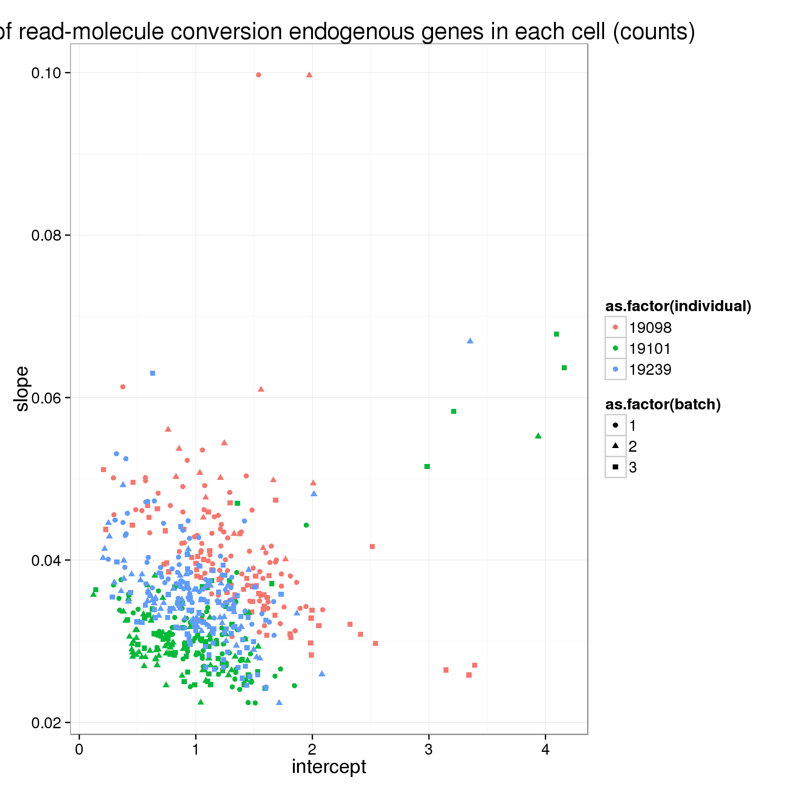
ggplot(anno_regression_ENSG,aes(x=Intercept,y=slope,col=as.factor(individual),shape=as.factor(batch))) + geom_point() + labs(x = "intercept", y = "slope", title = "lm of read-molecule conversion endogenous genes in each cell (counts)") + facet_grid(individual ~ batch)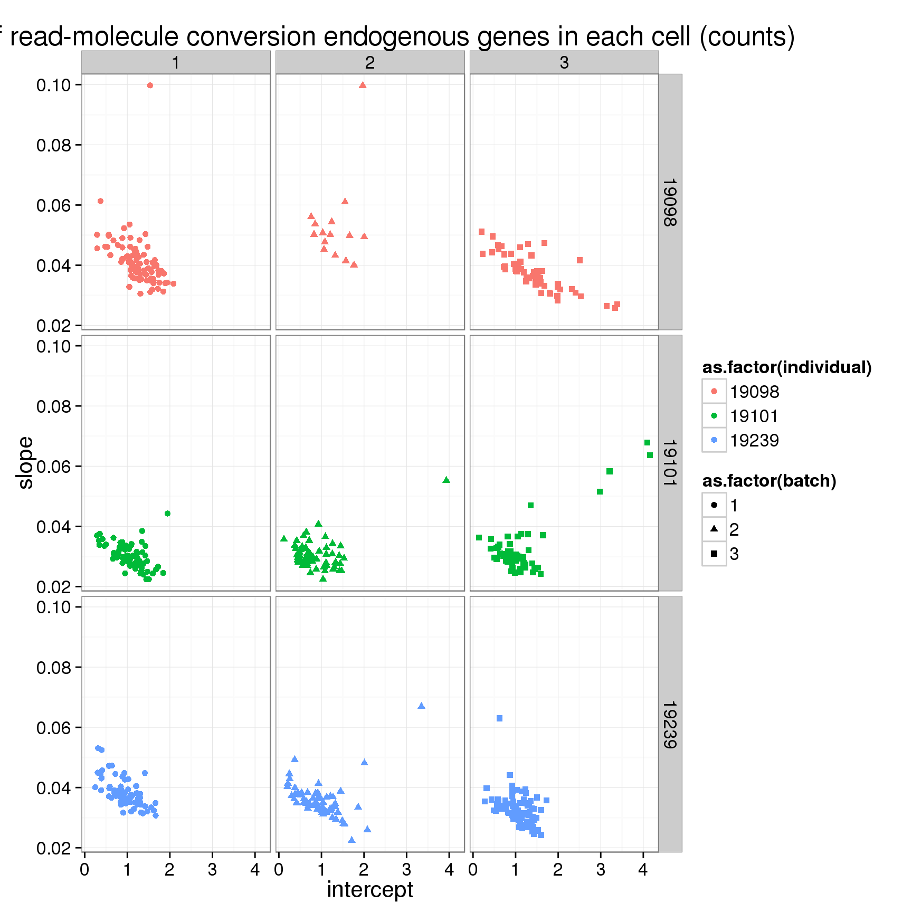
## plot all the lines
anno_regression_ENSG$reads_mean <- apply(reads_ENSG, 2, mean)
anno_regression_ENSG$molecules_mean <- apply(molecules_ENSG, 2, mean)
ggplot(anno_regression_ENSG, aes(x= reads_mean, y= molecules_mean)) + geom_point() + geom_abline(aes(intercept=Intercept, slope=slope, col=as.factor(individual), alpha= 0.5), data=anno_regression_ENSG)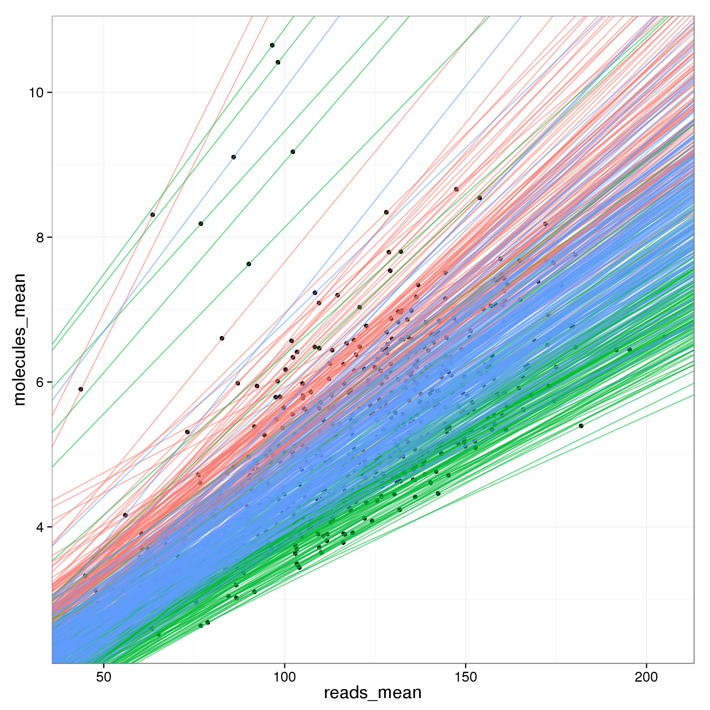
ggplot(anno_regression_ENSG, aes(x= reads_mean, y= molecules_mean)) + geom_point() + geom_abline(aes(intercept=Intercept, slope=slope, col=as.factor(individual), alpha= 0.5), data=anno_regression_ENSG) + facet_grid(individual ~ batch)
There is a clear difference between individuals. How about difference between batches? Use 9 different colors to visualize the 9 batches
ggplot(anno_regression_ENSG, aes(x = Intercept, y = slope, col = paste(individual, batch, sep = "."))) +
geom_point() +
scale_color_brewer(palette = "Set1", name = "9 batches") +
labs(title = "lm of read-molecule conversion endogenous genes in each cell (counts)")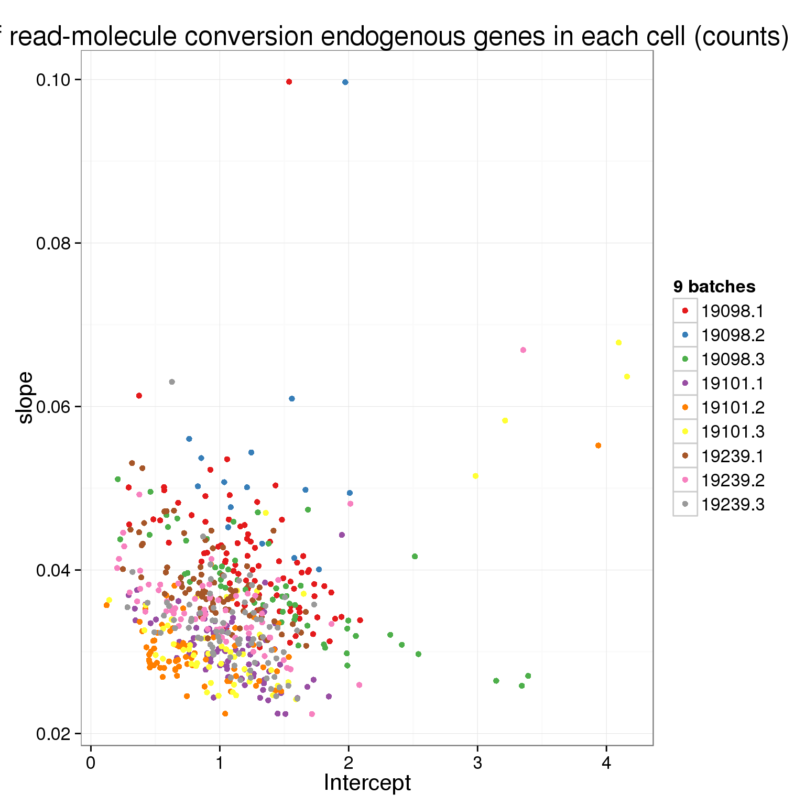
Here are the batches split by individual.
ggplot(anno_regression_ENSG, aes(x = Intercept, y = slope)) +
geom_point(aes(color = as.factor(batch))) +
facet_wrap(~individual, nrow = 3) +
scale_color_brewer(palette = "Dark2", name = "batch") +
labs(title = "lm of read-molecule conversion endogenous genes in each cell (counts)")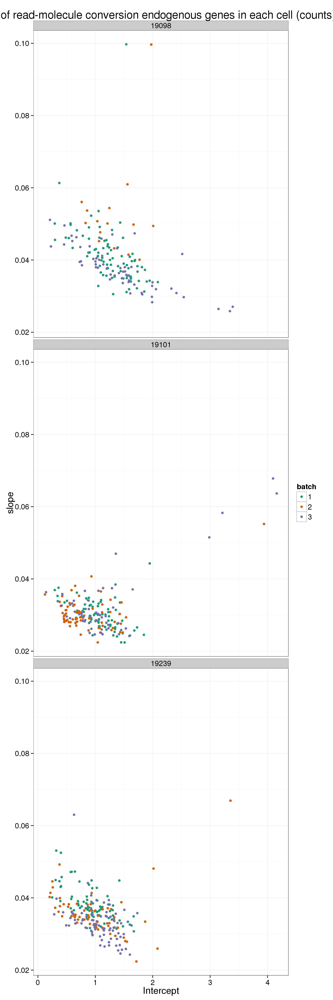
Pairwise distance in (intercept, slope) between batches or individuals.
- Compute pairwise Euclidean distance between cells.
anno_regression_ENSG_dist <- as.matrix( dist(anno_regression_ENSG[ , c("Intercept", "slope")]) )
rownames(anno_regression_ENSG_dist) <- with(anno_regression_ENSG,
paste(individual, batch, sep = "_"))
colnames(anno_regression_ENSG_dist) <- rownames(anno_regression_ENSG_dist)
anno_regression_ENSG_dist[1:2, 1:2] 19098_1 19098_1
19098_1 0.0000000 0.4931873
19098_1 0.4931873 0.0000000- Cell-to-cell Euclidean distance within each individiaual, batch
## All cells
dist_mean <- data.frame(dist = rowSums(anno_regression_ENSG_dist)/(ncol(anno_regression_ENSG_dist) - 1))
ggplot(dist_mean, aes(y = dist, x = 1)) + geom_violin(alpha = .5) +
geom_boxplot(alpha = .01, width = .2, position = position_dodge(width = .9)) +
labs(title = "Mean cell-to-cell distance in (intercept, slope)", x = "") +
theme(axis.text.x = element_text(hjust=1, angle = 45))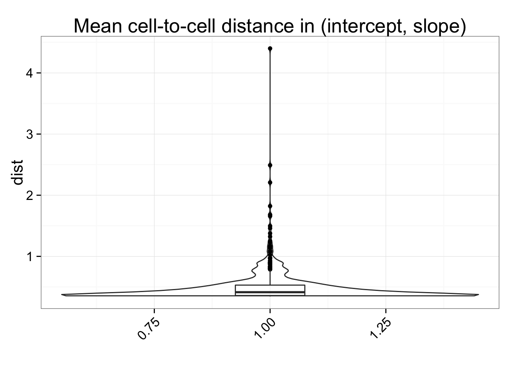
## Within batch
batch_unique <- with(anno_regression_ENSG, paste(individual, batch, sep = "_"))
dist_vec <- lapply(1:length(unique(batch_unique)), function(per_batch) {
dist_foo <- anno_regression_ENSG_dist[batch_unique == unique(batch_unique)[per_batch],
batch_unique == unique(batch_unique)[per_batch] ]
data.frame(dist = c(rowSums(dist_foo)/(ncol(dist_foo) - 1)),
batch_unique = rep(unique(batch_unique)[per_batch], ncol(dist_foo) ) )
})
dist_vec <- do.call(rbind, dist_vec)
str(dist_vec)'data.frame': 578 obs. of 2 variables:
$ dist : num 0.404 0.344 0.363 0.332 0.629 ...
$ batch_unique: Factor w/ 9 levels "19098_1","19098_2",..: 1 1 1 1 1 1 1 1 1 1 ...ggplot(dist_vec, aes(x= factor(batch_unique), y = dist, fill = factor(batch_unique)),
height = 600, width = 2000) +
geom_violin(alpha = .5) + geom_boxplot(alpha = .01, width = .2, position = position_dodge(width = .9)) +
labs(title = "Mean cell-to-cell distance within batch \n
in (intercept, slope)") +
theme(axis.text.x = element_text(hjust=1, angle = 45))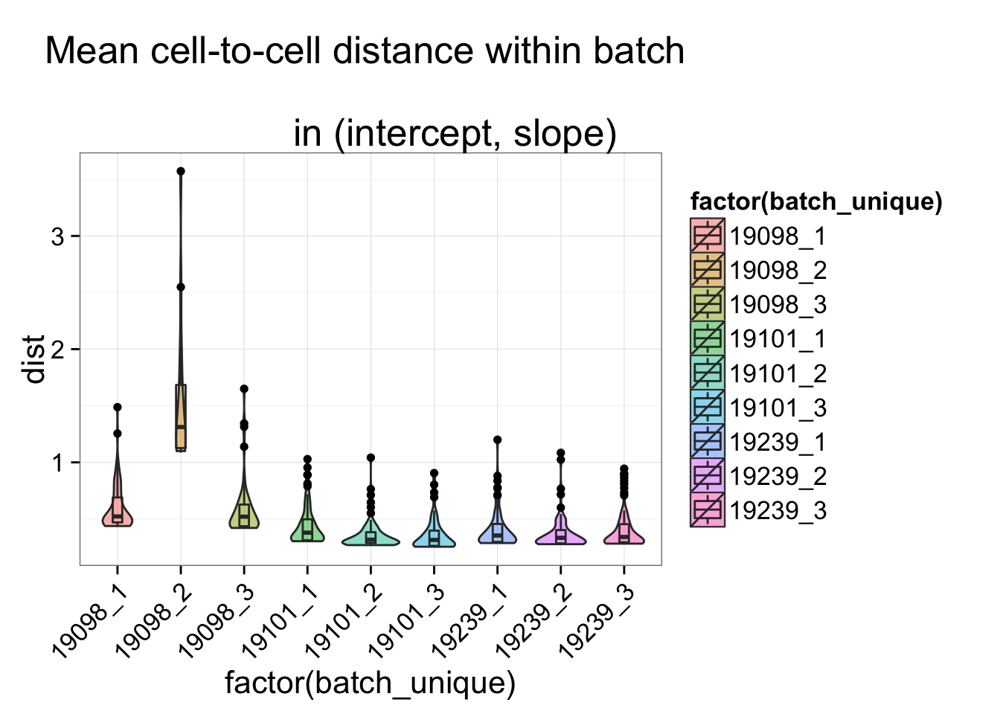
## Within individual
individual <- anno_regression_ENSG$individual
dist_vec <- lapply(1:length(unique(individual)), function(per_individual) {
dist_foo <- anno_regression_ENSG_dist[individual == unique(individual)[per_individual],
individual == unique(individual)[per_individual] ]
data.frame(dist = c(rowSums(dist_foo)/(ncol(dist_foo) - 1)),
individual = rep(unique(individual)[per_individual], ncol(dist_foo) ) )
})
dist_vec <- do.call(rbind, dist_vec)
str(dist_vec)'data.frame': 578 obs. of 2 variables:
$ dist : num 0.457 0.429 0.446 0.404 0.699 ...
$ individual: int 19098 19098 19098 19098 19098 19098 19098 19098 19098 19098 ...ggplot(dist_vec, aes(x= factor(individual), y = dist, fill = factor(individual)),
height = 600, width = 2000) +
geom_violin(alpha = .5) + geom_boxplot(alpha = .01, width = .2, position = position_dodge(width = .9)) +
labs(title = "Mean cell-to-cell distance within individual \n
in (intercept, slope)") +
theme(axis.text.x = element_text(hjust=1, angle = 45))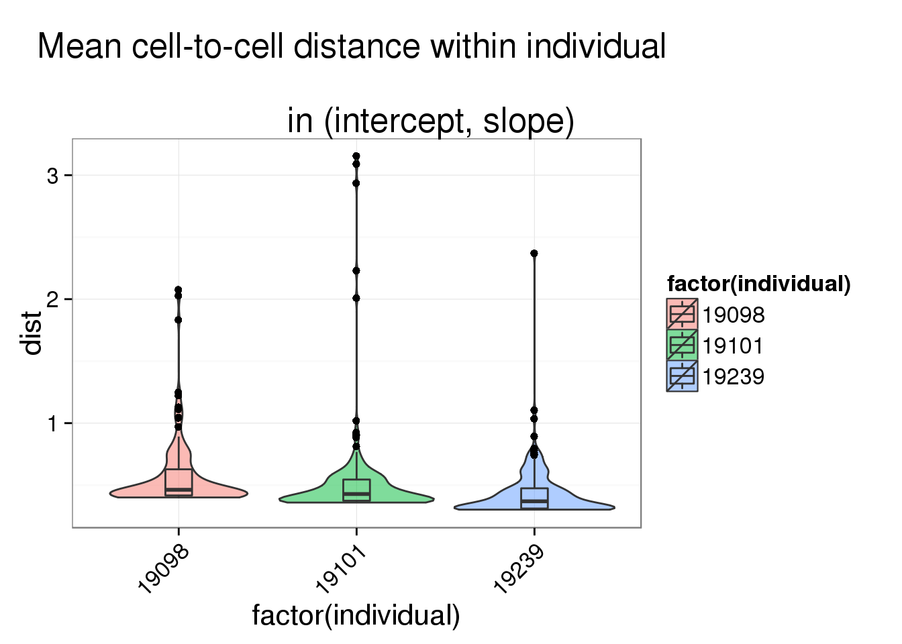
- compare the distance of two cells (1) within batch, (2) between batch of same individual, and (3) between individual
ind_index <- (anno_regression_ENSG$individual)
ind_batch_index <- with(anno_regression_ENSG,paste(individual, batch, sep = "_"))
same_ind_index <- outer(ind_index,ind_index,function(x,y) x==y)
same_batch_index <- outer(ind_batch_index,ind_batch_index,function(x,y) x==y)
dim_temp <- dim(anno_regression_ENSG_dist)
dist_index_matrix <- matrix("diff_ind",nrow=dim_temp[1],ncol=dim_temp[2])
dist_index_matrix[same_ind_index & !same_batch_index] <- "same_ind_diff_batch"
dist_index_matrix[same_batch_index] <- "same_batch"
ans <- lapply(unique(c(dist_index_matrix)),function(x){
temp <- c(anno_regression_ENSG_dist[(dist_index_matrix==x)&(upper.tri(dist_index_matrix,diag=FALSE))])
data.frame(dist=temp,type=rep(x,length(temp)))
})
ans1 <- do.call(rbind,ans)
boxplot(dist~type,data=ans1)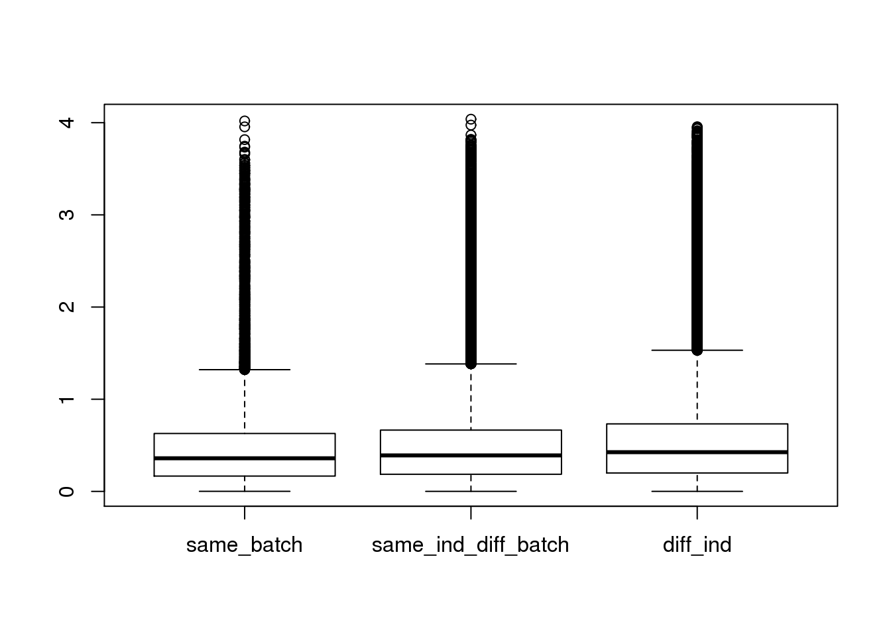
plot(density(ans1$dist[ans1$type=="same_batch"]))
lines(density(ans1$dist[ans1$type=="same_ind_diff_batch"]),col=2)
lines(density(ans1$dist[ans1$type=="diff_ind"]),col=3)
ggplot(ans1, aes(x= factor(type), y = dist, col = factor(type)), height = 600, width = 2000) +
geom_boxplot(outlier.shape = NA, alpha = .01, width = .2, position = position_dodge(width = .9)) +
ylim(0,1.5) +
labs(title = "cell-cell distance (slope and intercept of lm)") +
theme(axis.text.x = element_text(hjust=1, angle = 45))Warning: Removed 6712 rows containing non-finite values (stat_boxplot).Warning: Removed 300 rows containing missing values (geom_point).Warning: Removed 413 rows containing missing values (geom_point).Warning: Removed 660 rows containing missing values (geom_point).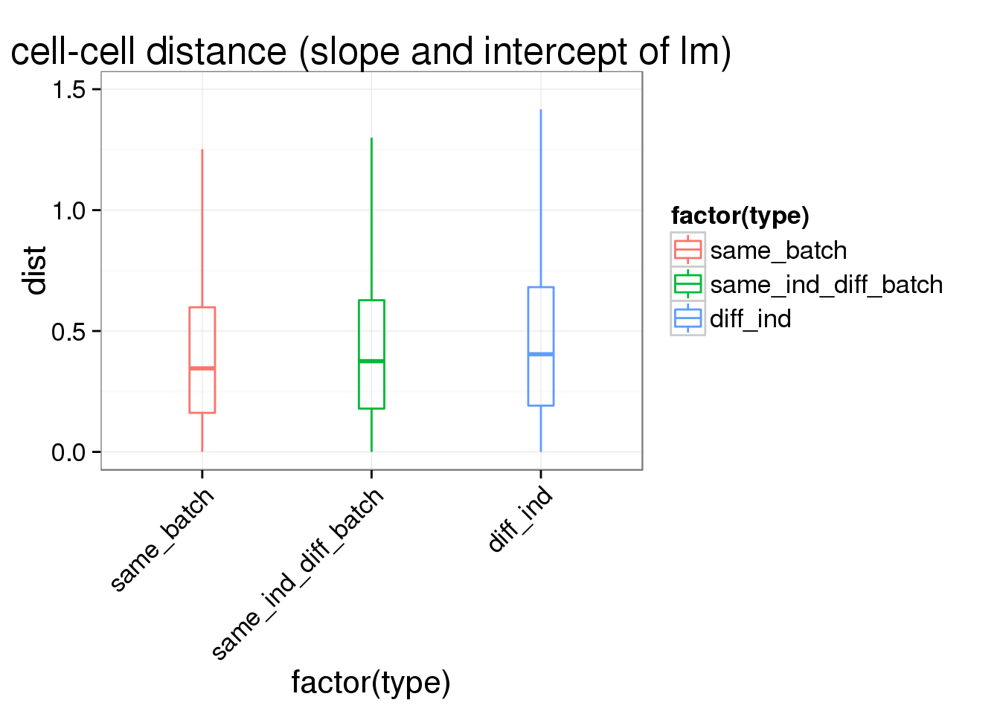
summary(lm(dist~type,data=ans1))
Call:
lm(formula = dist ~ type, data = ans1)
Residuals:
Min 1Q Median 3Q Max
-0.5457 -0.3339 -0.1172 0.1769 3.5505
Coefficients:
Estimate Std. Error t value Pr(>|t|)
(Intercept) 0.468258 0.003516 133.18 <2e-16 ***
typesame_ind_diff_batch 0.036000 0.004380 8.22 <2e-16 ***
typediff_ind 0.077562 0.003823 20.29 <2e-16 ***
---
Signif. codes: 0 '***' 0.001 '**' 0.01 '*' 0.05 '.' 0.1 ' ' 1
Residual standard error: 0.4984 on 166750 degrees of freedom
Multiple R-squared: 0.003061, Adjusted R-squared: 0.003049
F-statistic: 256 on 2 and 166750 DF, p-value: < 2.2e-1619098 have more total endogenous gene molecules and more ERCC molecule
anno_regression_ENSG$total_molecule_ERCC <- apply(molecules_ERCC, 2, sum)
anno_regression_ENSG$total_molecule_ENSG <- apply(molecules_ENSG, 2, sum)
anno_regression_ENSG$total_molecule <- apply(molecules, 2, sum)
ggplot(anno_regression_ENSG, aes(x= total_molecule_ERCC, y= total_molecule,col=as.factor(individual),shape=as.factor(batch))) + geom_point()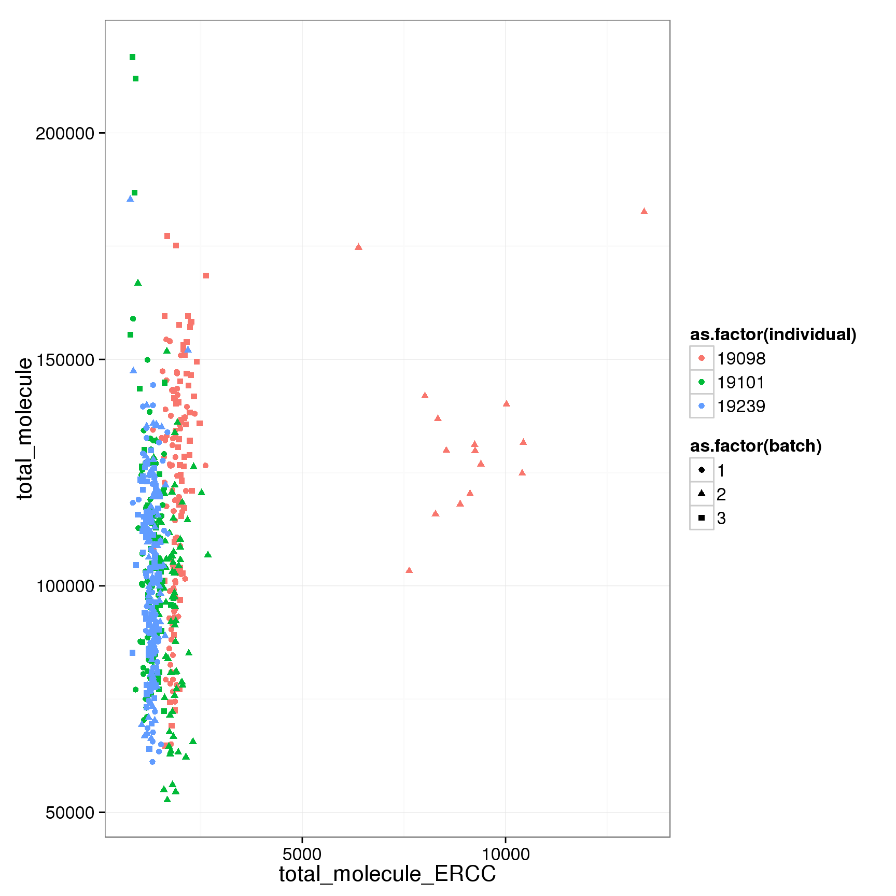
ggplot(anno_regression_ENSG, aes(x = as.factor(individual), y = total_molecule_ENSG)) + geom_boxplot(aes(fill = as.factor(batch)))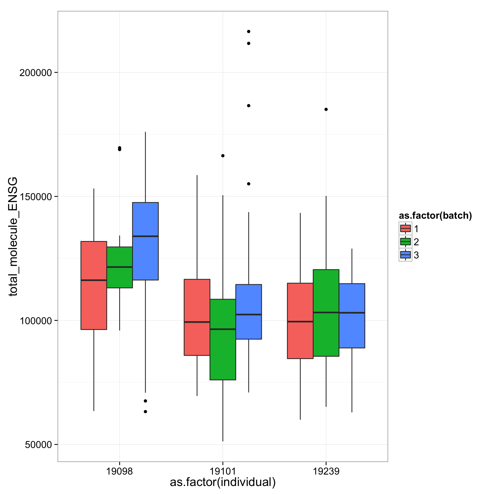
ggplot(anno_regression_ENSG, aes(x = as.factor(individual), y = total_molecule_ERCC)) + geom_boxplot(aes(fill = as.factor(batch)))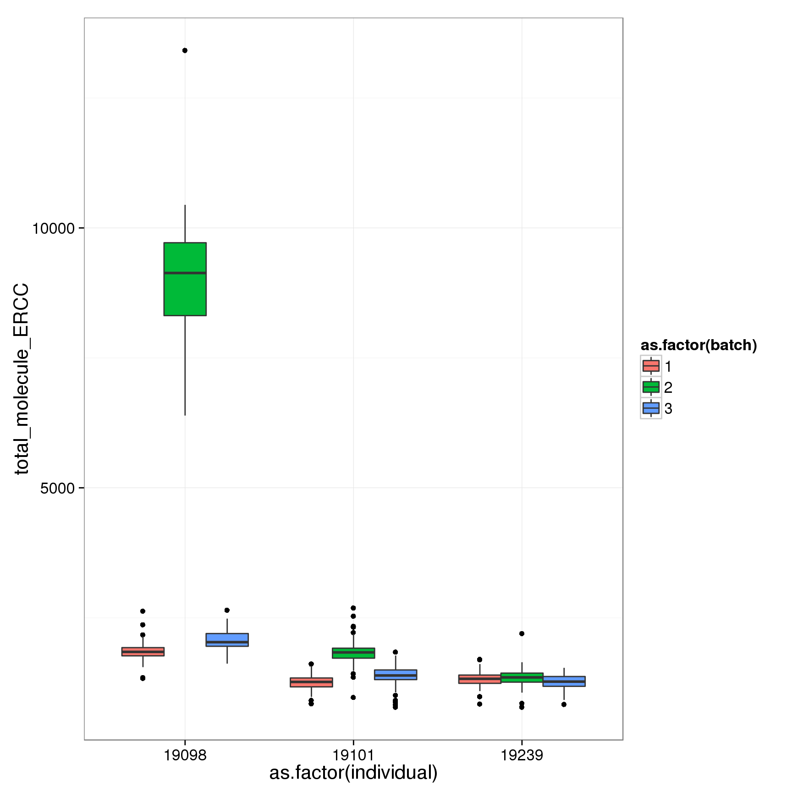
Log2 counts
Compare the log counts. The r squared values of lm are relativiely low (around 0.85).
regression_table_log <- as.data.frame(do.call(rbind,lapply(names(reads_log),function(x){
fit.temp <- lm(molecules_log[,x]~reads_log[,x])
c(x,fit.temp$coefficients,summary(fit.temp)$adj.r.squared)
})))
names(regression_table_log) <- c("sample_id","Intercept","slope","r2")
regression_table_log$Intercept <- as.numeric(as.character(regression_table_log$Intercept))
regression_table_log$slope <- as.numeric(as.character(regression_table_log$slope))
regression_table_log$r2 <- as.numeric(as.character(regression_table_log$r2))
plot(regression_table_log$r2)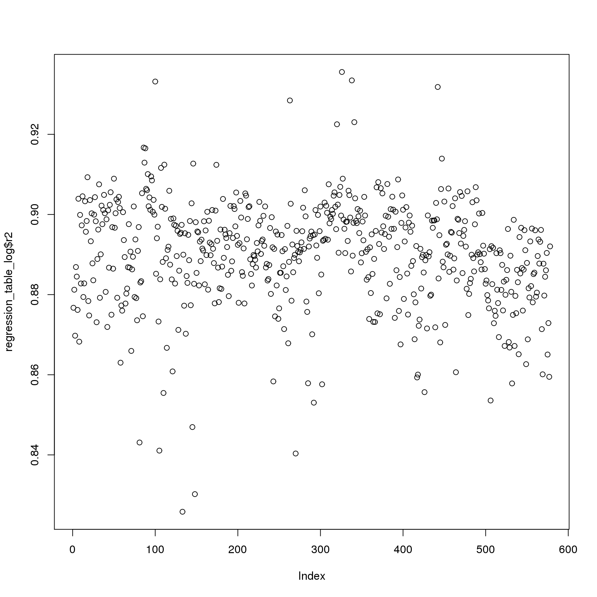
anno_regression_log <- merge(anno,regression_table_log,by="sample_id")
ggplot(anno_regression_log,aes(x=Intercept,y=slope,col=as.factor(individual),shape=as.factor(batch))) + geom_point() + labs(x = "intercept", y = "slope", title = "read-molecule conversion (log2)")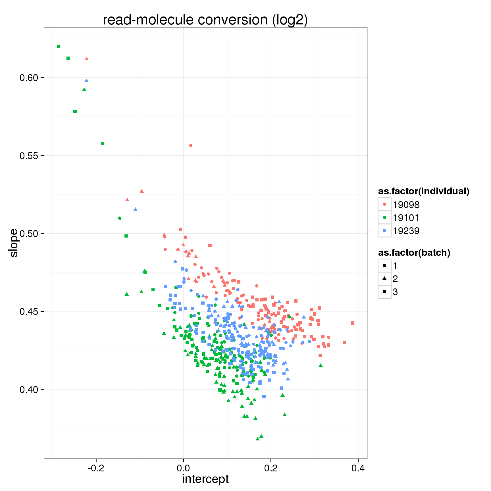
counts per million
Compare the counts per million.
regression_table_cpm <- as.data.frame(do.call(rbind,lapply(colnames(reads_cpm),function(x){
fit.temp <- lm(molecules_cpm[,x]~reads_cpm[,x])
c(x,fit.temp$coefficients,summary(fit.temp)$adj.r.squared)
})))
names(regression_table_cpm) <- c("sample_id","Intercept","slope","r2")
regression_table_cpm$Intercept <- as.numeric(as.character(regression_table_cpm$Intercept))
regression_table_cpm$slope <- as.numeric(as.character(regression_table_cpm$slope))
regression_table_cpm$r2 <- as.numeric(as.character(regression_table_cpm$r2))
plot(regression_table_cpm$r2)anno_regression_cpm <- merge(anno,regression_table_cpm,by="sample_id")
ggplot(anno_regression_cpm,aes(x=Intercept,y=slope,col=as.factor(individual),shape=as.factor(batch))) + geom_point() + labs(x = "intercept", y = "slope", title = "read-molecule conversion (cpm no log)")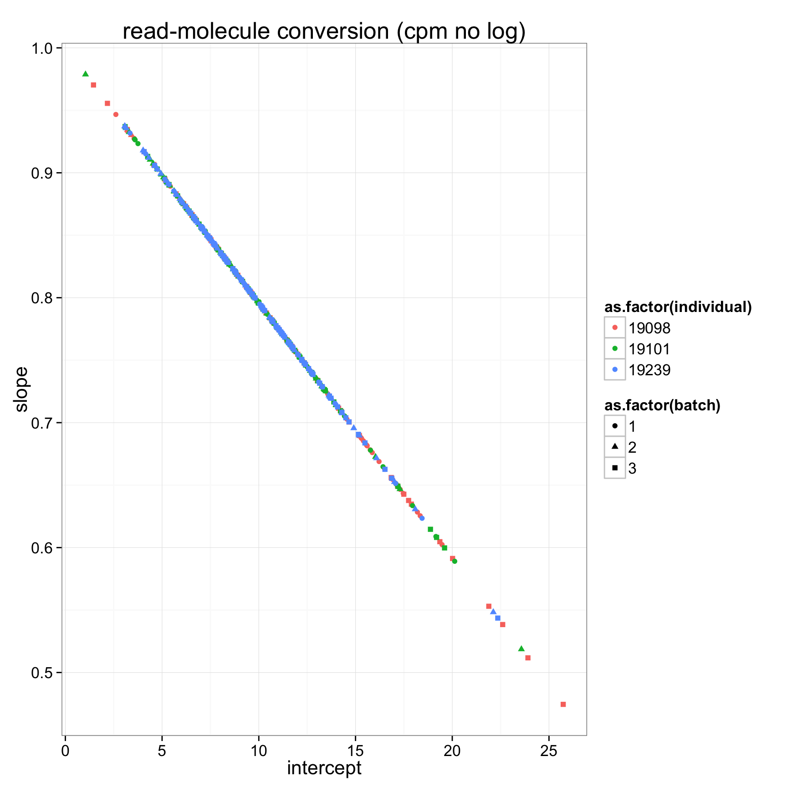
ggplot(anno_regression_cpm,aes(x=Intercept,y=slope,col=as.factor(individual),shape=as.factor(batch))) + geom_point() + labs(x = "intercept", y = "slope", title = "read-molecule conversion (cpm no log)") + facet_grid(individual ~ batch) 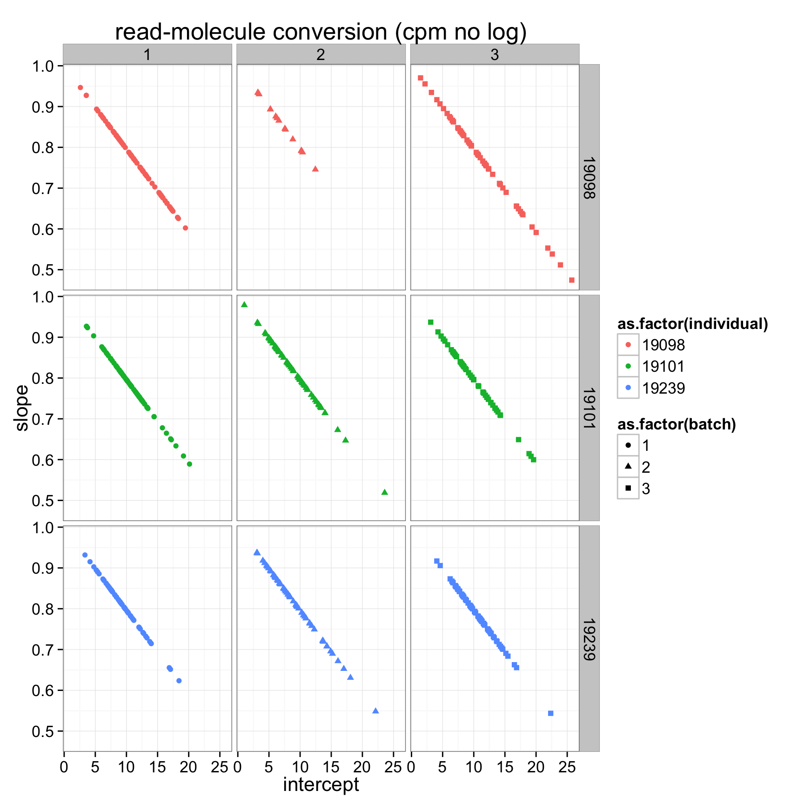
## plot all the lines
anno_regression_cpm$reads_mean <- apply(reads_cpm, 2, mean)
anno_regression_cpm$molecules_mean <- apply(molecules_cpm, 2, mean)
ggplot(anno_regression_cpm, aes(x= reads_mean, y= molecules_mean)) + geom_point() + geom_abline(aes(intercept=Intercept, slope=slope, col=as.factor(individual), alpha = 0.01), data=anno_regression_cpm) + facet_grid(individual ~ batch) 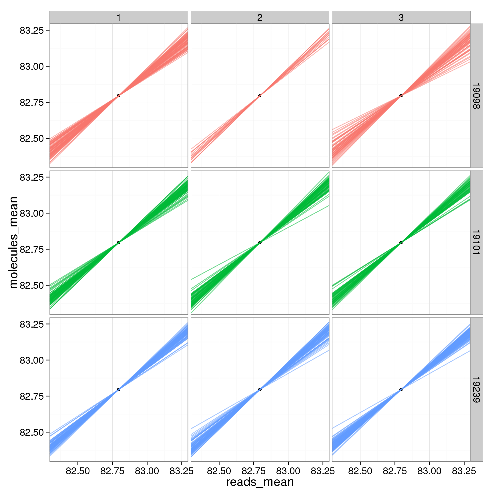
## look at just the slope using total raw molecule counts (total cpm molecule counts are all the same across cells)
anno_regression_cpm$total_molecule <- apply(molecules, 2, sum)
ggplot(anno_regression_cpm, aes(x= total_molecule, y= slope,col=as.factor(individual),shape=as.factor(batch))) + geom_point()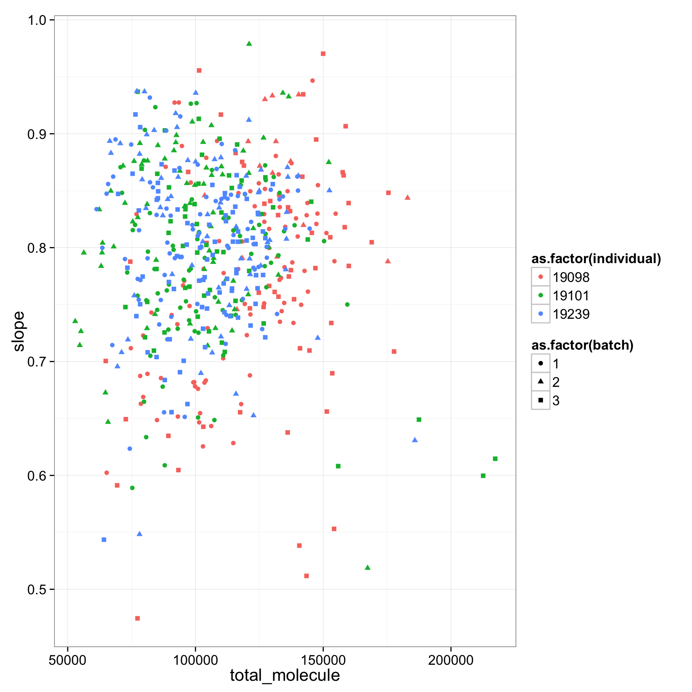
Only ERCC genes
## grep ERCC
reads_cpm_ERCC <- as.data.frame(reads_cpm[grep("ERCC", rownames(reads_cpm)), ])
molecules_cpm_ERCC <- as.data.frame(molecules_cpm[grep("ERCC", rownames(molecules_cpm)), ])
## linear regression per cell and make a table with intercept, slope, and r-squared
regression_table_cpm_ERCC <- as.data.frame(do.call(rbind,lapply(names(reads_cpm_ERCC),function(x){
fit.temp <- lm(molecules_cpm_ERCC[,x]~reads_cpm_ERCC[,x])
c(x,fit.temp$coefficients,summary(fit.temp)$adj.r.squared)
})))
names(regression_table_cpm_ERCC) <- c("sample_id","Intercept","slope","r2")
regression_table_cpm_ERCC$Intercept <- as.numeric(as.character(regression_table_cpm_ERCC$Intercept))
regression_table_cpm_ERCC$slope <- as.numeric(as.character(regression_table_cpm_ERCC$slope))
regression_table_cpm_ERCC$r2 <- as.numeric(as.character(regression_table_cpm_ERCC$r2))
plot(regression_table_cpm_ERCC$r2)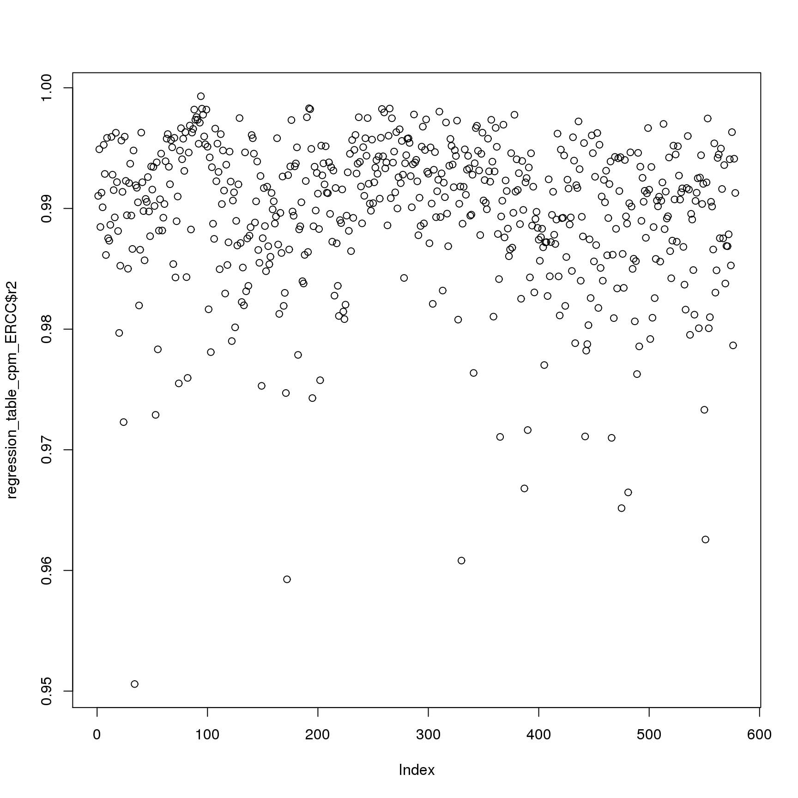
anno_regression_cpm_ERCC <- merge(anno,regression_table_cpm_ERCC,by="sample_id")
ggplot(anno_regression_cpm_ERCC,aes(x=Intercept,y=slope,col=as.factor(individual),shape=as.factor(batch))) + geom_point() + labs(x = "intercept", y = "slope", title = "read-molecule conversion ERCC genes (cpm no log)") 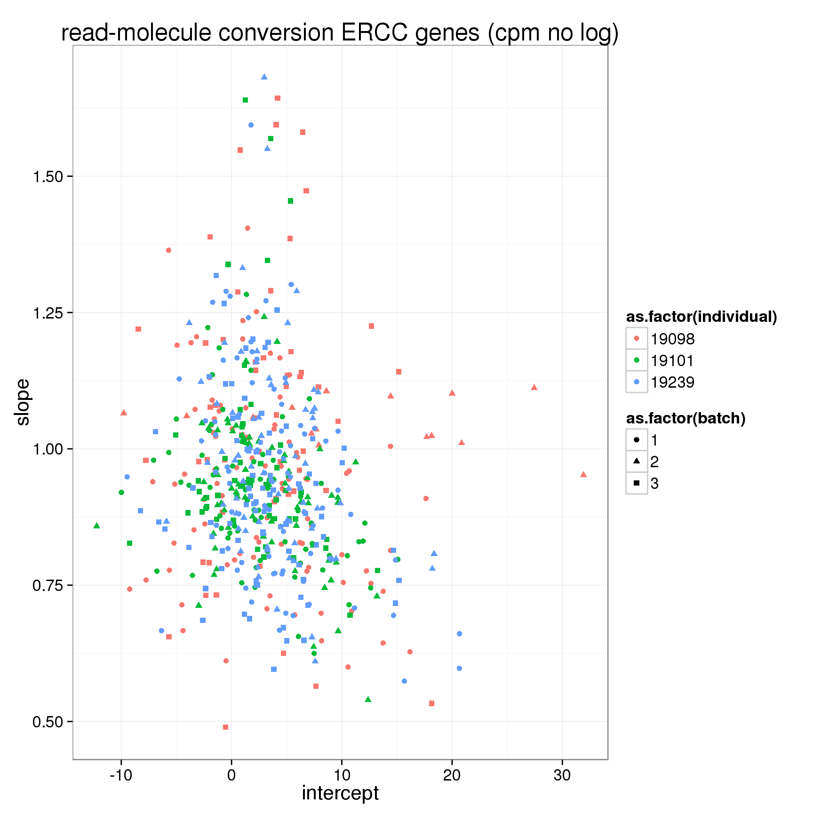
## plot all the lines
anno_regression_cpm_ERCC$reads_mean <- apply(reads_cpm_ERCC, 2, mean)
anno_regression_cpm_ERCC$molecules_mean <- apply(molecules_cpm_ERCC, 2, mean)
ggplot(anno_regression_cpm_ERCC, aes(x= reads_mean, y= molecules_mean)) + geom_point() + geom_abline(aes(intercept=Intercept, slope=slope, col=as.factor(individual), alpha= 0.5), data=anno_regression_cpm_ERCC) + facet_grid(individual ~ batch)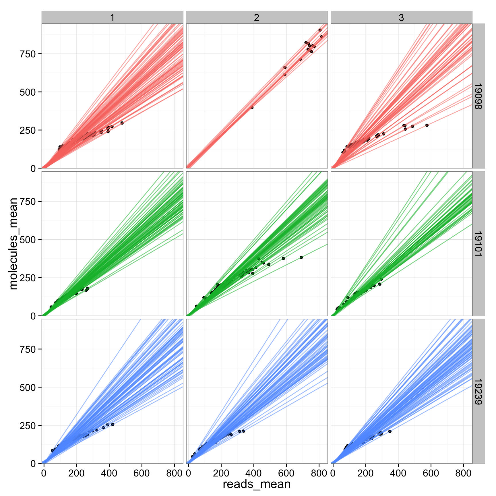
TMM-normalized counts per million
Compare TMM-normalized log2-transformed cpm .
regression_table_tmm <- as.data.frame(do.call(rbind,lapply(colnames(reads_tmm),function(x){
fit.temp <- lm(molecules_tmm[,x]~reads_tmm[,x])
c(x,fit.temp$coefficients,summary(fit.temp)$adj.r.squared)
})))
names(regression_table_tmm) <- c("sample_id","Intercept","slope","r2")
regression_table_tmm$Intercept <- as.numeric(as.character(regression_table_tmm$Intercept))
regression_table_tmm$slope <- as.numeric(as.character(regression_table_tmm$slope))
regression_table_tmm$r2 <- as.numeric(as.character(regression_table_tmm$r2))
plot(regression_table_tmm$r2)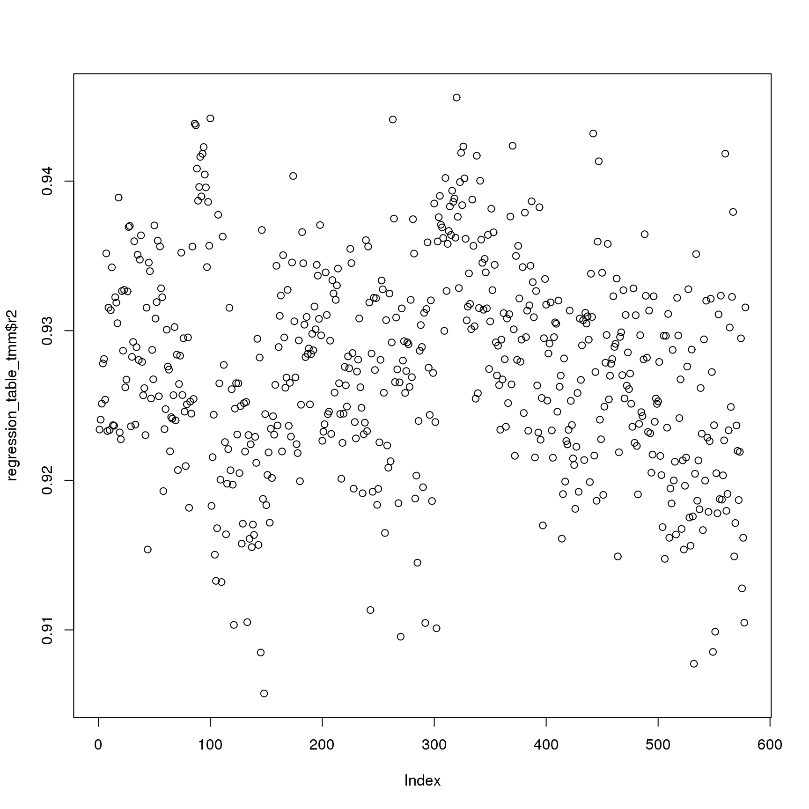
anno_regression_tmm <- merge(anno,regression_table_tmm,by="sample_id")
ggplot(anno_regression_tmm,aes(x=Intercept,y=slope,col=as.factor(individual),shape=as.factor(batch))) + geom_point() + labs(x = "intercept", y = "slope", title = "read-molecule conversion (tmm cpm log)")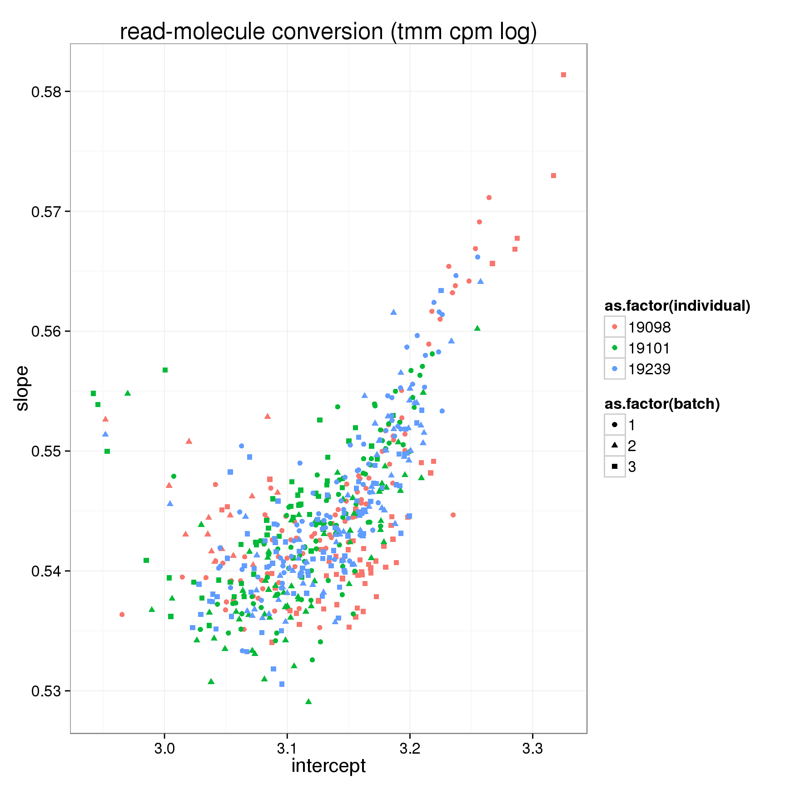
ggplot(anno_regression_tmm,aes(x=Intercept,y=slope,col=as.factor(individual),shape=as.factor(batch))) + geom_point() + labs(x = "intercept", y = "slope", title = "read-molecule conversion (tmm cpm log)") + facet_grid(individual ~ batch) 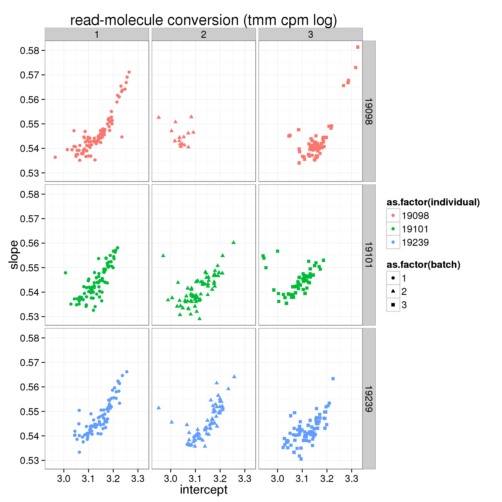
## plot all the lines
anno_regression_tmm$reads_mean <- apply(reads_tmm, 2, mean)
anno_regression_tmm$molecules_mean <- apply(molecules_tmm, 2, mean)
ggplot(anno_regression_tmm, aes(x= reads_mean, y= molecules_mean)) + geom_point() + geom_abline(aes(intercept=Intercept, slope=slope, col=as.factor(individual), alpha = 0.01), data=anno_regression_tmm) + facet_grid(individual ~ batch) 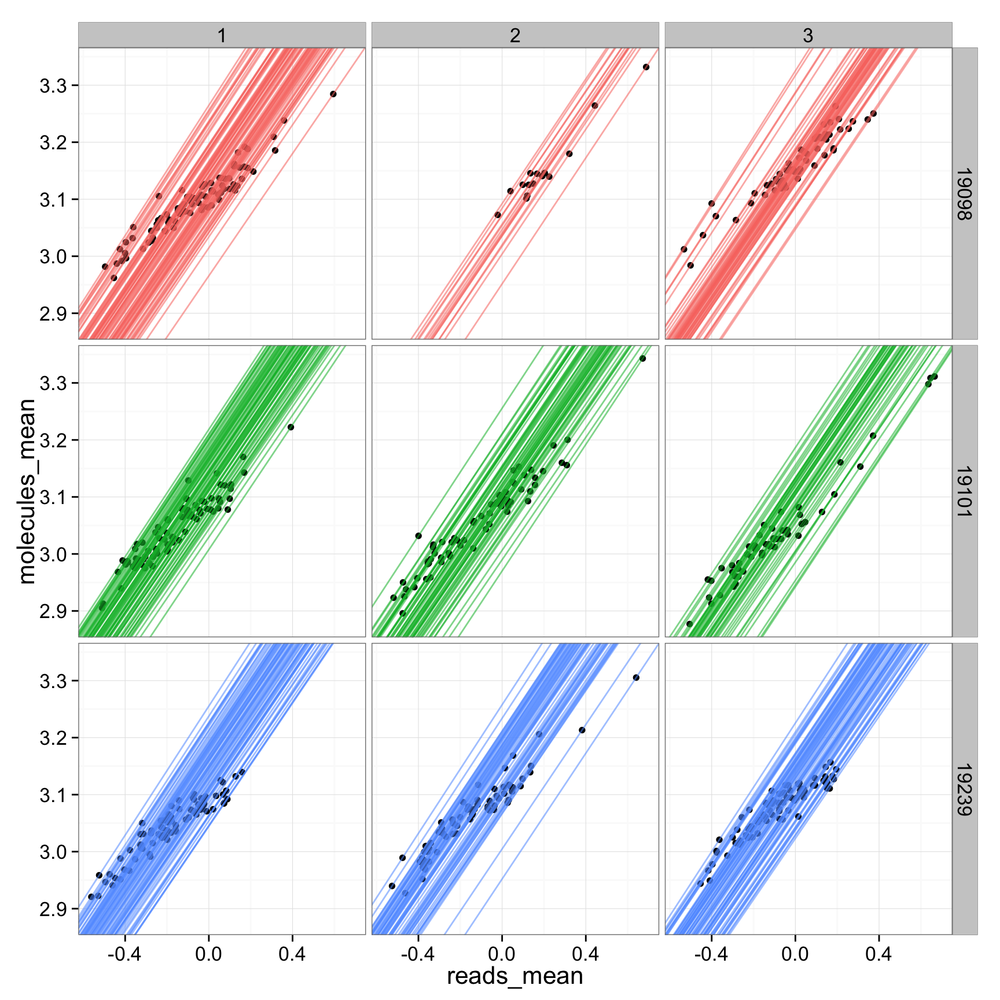
Session information
sessionInfo()R version 3.2.0 (2015-04-16)
Platform: x86_64-unknown-linux-gnu (64-bit)
locale:
[1] LC_CTYPE=en_US.UTF-8 LC_NUMERIC=C
[3] LC_TIME=en_US.UTF-8 LC_COLLATE=en_US.UTF-8
[5] LC_MONETARY=en_US.UTF-8 LC_MESSAGES=en_US.UTF-8
[7] LC_PAPER=en_US.UTF-8 LC_NAME=C
[9] LC_ADDRESS=C LC_TELEPHONE=C
[11] LC_MEASUREMENT=en_US.UTF-8 LC_IDENTIFICATION=C
attached base packages:
[1] stats graphics grDevices utils datasets methods base
other attached packages:
[1] tidyr_0.2.0 edgeR_3.10.2 limma_3.24.9 ggplot2_1.0.1 dplyr_0.4.2
[6] knitr_1.10.5
loaded via a namespace (and not attached):
[1] Rcpp_0.12.0 magrittr_1.5 MASS_7.3-40
[4] munsell_0.4.2 colorspace_1.2-6 R6_2.1.1
[7] stringr_1.0.0 plyr_1.8.3 tools_3.2.0
[10] parallel_3.2.0 grid_3.2.0 gtable_0.1.2
[13] DBI_0.3.1 htmltools_0.2.6 yaml_2.1.13
[16] assertthat_0.1 digest_0.6.8 RColorBrewer_1.1-2
[19] reshape2_1.4.1 formatR_1.2 evaluate_0.7
[22] rmarkdown_0.6.1 labeling_0.3 stringi_0.4-1
[25] scales_0.2.4 proto_0.3-10